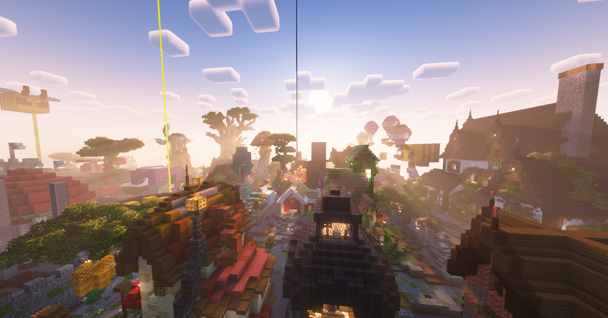

QuartzCraft Statistics
How many pumpkin pies has the server eaten?
not enough
QuartzCraft is a public, semi-vanilla, all inclusive Minecraft server. I’ve been playing on it for a bit over a year at this point, so I knew I’d spent enough time on it to gather a large amount of data. There have been 666 unique players, and lots of incredible builds, with a wide variety of palettes and styles, so my data would be widespread and full of variety.
I wanted to answer a few questions, such as what block was mined the most, or what the favorite food of the server was. Mostly though I was just curious to see what all would come out of the survey. (see right)
So I sent out a survey to the server, excited to see the responses that would come in. Meanwhile, I went to collect my own data, using the statistics sheet in the minecraft menu, which was a great tool for this project, since the game automatically collects data as you play, and it just needed to be entered into the sheet. I was very surprised to find I had never killed the enderdragon on the server, so I did go do that before I submitted my data.
There were many interesting results from the data collected, such as one of the top items being picked up was raw beef, with a number up in the thousands. Also, pumpkin pies were one of the least common foods eaten, with the highest number being 184 pies eaten. Oddly enough though one participant had crafted over 1200 pies.
Top Stats
The circular packing table shows some of the top stats, such as the most picked up item, or the most broken tool.
The circle colors corespond with the following:
The lolipop chart shoes the top rank of each job on the server.
Top Job Stats
Flowers of QC
The circular barplot was stylized to resemble a flower because it is displaying the top flowers and how often they’ve been used, with roses being the most used flower, followed by poppies. Looks like the server is a fan of red flowers!
Not all of the stats had a variety of answers, in fact some stats all had the same answer! The violin chart shows this, with the block mined the most being stone, and the tool used the most being a netherite pickaxe! Very fancy tool for a very common block.
Curious about your own statistics? check them out and see how they compare!